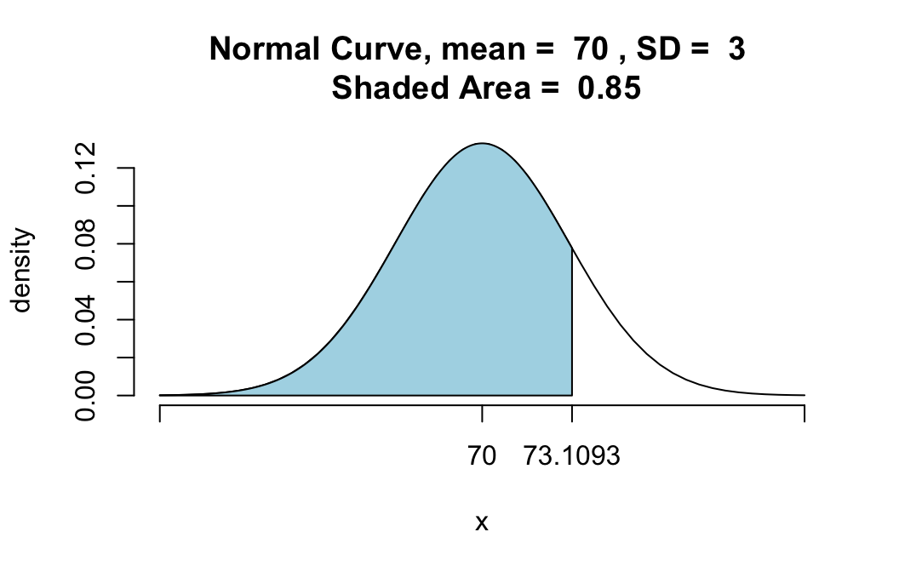
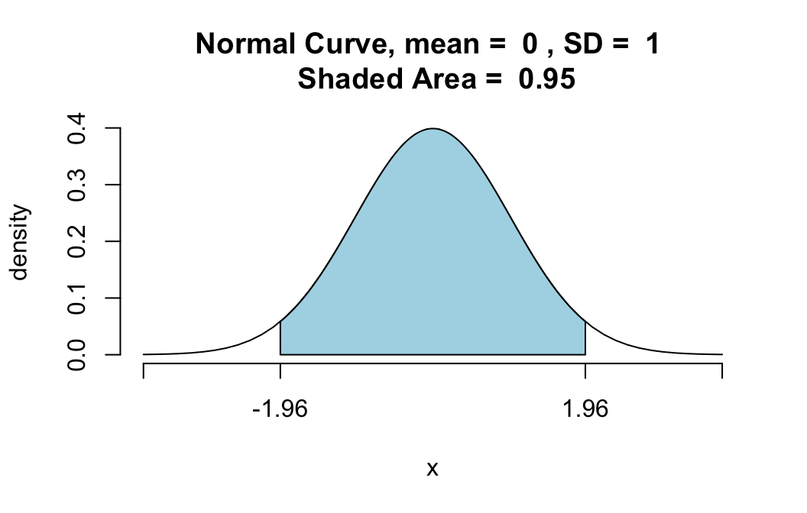

Using qnorm()
Comparison of qnorm() with pnormGC()
The function pnorm() in regular R, as well as the function pnormGC() in thetigerstats` package, compute probabilities from known bounding values. For example, suppose that \(X\) is a normally distributed random variable with mean 70 and standard deviation 3, and that you want to know:
\[P(X < 72).\]
Then you know the boundary value 72, but you don’t know the probability: the area under the normal density curve before 72. Functions like pnormGC() aim to give you that area–that probability:
pnormGC(72, region="below", mean=70,
sd=3,graph=TRUE)
## [1] 0.7475075The function qnorm(), which comes standard with R, aims to do the opposite: given an area, find the boundary value that determines this area.
For example, suppose you want to find that 85th percentile of a normal distribution whose mean is 70 and whose standard deviation is 3. Then you ask for:
qnorm(0.85,mean=70,sd=3)## [1] 73.1093The value 73.1093 is indeed the 85th percentile, in the sense that 85% of the values in a population that is normally distributed with mean 70 and standard deviation 3 will lie below 73.1093. In other words, if you were to pick a random member \(X\) from such a population, then
\[P(X < 73.1093) = 0.85\].
You can check that this is correct by plugging 73.1093 into pnormGC():
pnormGC(73.1093,region="below",mean=70,
sd=3,graph=TRUE)
## [1] 0.85Sure enough, the area under the curve before 73.1093 is 0.85.
A Few More Examples
Making the Top Ten Percent (An Area Above)
Suppose that SAT scores are normally distributed, and that the mean SAT score is 1000, and the standard deviation of all SAT scores is 100. How high must you score so that only 10% of the population scores higher than you?
Here’s the solution. If 10% score higher than you, then 90% score lower. So just call qnorm() with 0.90 as the boundary value:
qnorm(0.90,mean=1000,sd=100)## [1] 1128.155In other words, the 90th percentile of SAT scores is around 1128.
Note: qnorm() deals by default with areas below the given boundary value. If we had asked for:
qnorm(0.10,mean=1000,sd=100)then we would have got only the 10th percentile of the SAT scores, not the desired 90th percentile. If you would like to input 0.10 directly, then you can do so provided that you fiddle with the lower.tail argument:
qnorm(0.10,mean=1000,sd=100,
lower.tail=FALSE)## [1] 1128.155But really it seems easier just to do the math:
\(1 - 0.10 = 0.90.\)
An Area Between
Find a positive number \(z\) so that the area under the standard normal curve between \(-z\) and \(z\) is 0.95.
Here’s the solution. If 95% of the area lies between \(-z\) and \(z\), then 5% of the area must lie outside of this range. since normal curves are symmetric, half of this amount–2.5%–must lie before \(-z\). Then the area under the curve before \(z\) must be:
\[0.025+0.95=0.975.\]
Hence the number \(z\) is actually the 97.5th percentile of the standard normal distribution, and we can find it as follows:
qnorm(0.975,mean=0,sd=1)## [1] 1.959964So \(z\) is about 1.96. We can check this result graphically as follows:
pnormGC(c(-1.96,1.96),region="between",mean=0,
sd=1,graph=TRUE)
## [1] 0.9500042